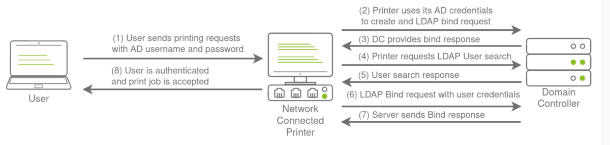
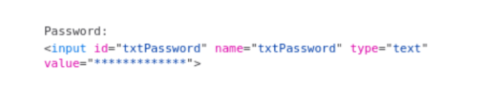
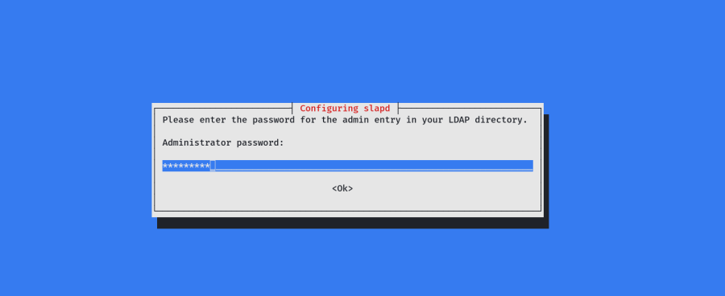
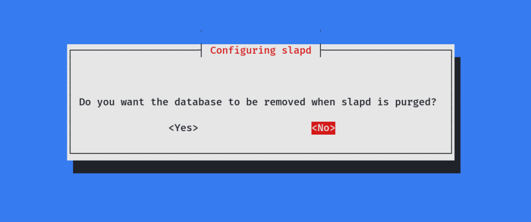

LDAP Bind Credentials
LDAP Bind Credentials
LDAP
Another method of AD authentication that applications can use is Lightweight Directory Access Protocol (LDAP) authentication. LDAP authentication is similar to NTLM authentication. However, with LDAP authentication, the application directly verifies the user's credentials. The application has a pair of AD credentials that it can use first to query LDAP and then verify the AD user's credentials.
LDAP authentication is a popular mechanism with third-party (non-Microsoft) applications that integrate with AD. These include applications and systems such as:
▪ Gitlab
▪ Jenkins
▪ Custom-developed web applications
▪ Printers
▪ VPNs
If any of these applications or services are exposed on the internet, the same type of attacks as those leveraged against NTLM authenticated systems can be used. However, since a service using LDAP authentication requires a set of AD credentials, it opens up additional attack avenues. In essence, we can attempt to recover the AD credentials used by the service to gain authenticated access to AD. The process of authentication through LDAP is shown below:

If you could gain a foothold on the correct host, such as a Gitlab server, it might be as simple as reading the configuration files to recover these AD credentials. These credentials are often stored in plain text in configuration files since the security model relies on keeping the location and storage configuration file secure rather than its contents. Configuration files are covered in more depth later.
LDAP Pass-back Attacks
However, one other very interesting attack can be performed against LDAP authentication mechanisms, called an LDAP Pass-back attack. This is a common attack against network devices, such as printers, when you have gained initial access to the internal network, such as plugging in a rogue device in a boardroom.
LDAP Pass-back attacks can be performed when we gain access to a device's configuration where the LDAP parameters are specified. This can be, for example, the web interface of a network printer. Usually, the credentials for these interfaces are kept to the default ones, such as admin:admin or admin:password. Here, we won't be able to directly extract the LDAP credentials since the password is usually hidden. However, we can alter the LDAP configuration, such as the IP or hostname of the LDAP server. In an LDAP Pass-back attack, we can modify this IP to our IP and then test the LDAP configuration, which will force the device to attempt LDAP authentication to our rogue device. We can intercept this authentication attempt to recover the LDAP credentials.
Performing an LDAP Pass-back
There is a network printer in this network where the administration website does not even require credentials. Navigate to http://printer.za.tryhackme.com/settings.aspx to find the settings page of the printer:
 4
4Using browser inspection, we can also verify that the printer website was at least secure enough to not just send the LDAP password back to the browser:

So we have the username, but not the password. However, when we press test settings, we can see that an authentication request is made to the domain controller to test the LDAP credentials. Let's try to exploit this to get the printer to connect to us instead, which would disclose the credentials. To do this, let's use a simple Netcat listener to test if we can get the printer to connect to us. Since the default port of LDAP is 389, we can use the following command:
nc -lvp 389
Then, I changed the Server IP in the webpage to my tun0 IP & clicked on Test Settings

I got a connection from the Printer. However, there is an issue.
You may require more than one try to receive a connection back but it should respond within 5 seconds. The supportedCapabilities response tells us we have a problem. Essentially, before the printer sends over the credentials, it is trying to negotiate the LDAP authentication method details. It will use this negotiation to select the most secure authentication method that both the printer and the LDAP server support. If the authentication method is too secure, the credentials will not be transmitted in cleartext. With some authentication methods, the credentials will not be transmitted over the network at all! So we can't just use normal Netcat to harvest the credentials. We will need to create a rogue LDAP server and configure it insecurely to ensure the credentials are sent in plaintext.
Creating/Setting Up a Rogue LDAP Server in Our Kali Machine:
apt install slapd ldap-utils
apt install libsasl2-modules libsasl2-modules-ldap
Note: The Last 2 Library files are installed to install the Cyrus SASL (This helps for default authentication of LDAP serer)
https://www.cyrusimap.org/sasl/sasl/installation.html
https://github.com/cyrusimap/cyrus-sasl/releases
Set a Password during slapd installation.

Once Installation is Complete, we need to configure the slapd using the following commands.
dpkg-reconfigure -p low slapd
1- Omit OpenLDAP server configuration? No

2- DNS domain name: {target AD domain name} i.e. testdomain.com Or in our case za.tryhackme.com

3- Organization name: {target AD domain name} i.e. testdomain.com Or in our case za.tryhackme.com

4- Administrator password: {password}, same as the one we configured earlier during the initial installation.

5- Do you want the database to be removed when slapd is purged? No

6- Move old database files before creating a new database — Yes

After finishing the configuration steps, start the slapd server.
systemctl start slapd
Now that the server is up and running, we need to configure its authentication methods to support PLAIN and LOGIN only. By default, OpenLDAP supports DIGEST-MD5, CRAM-MD5, and NTLM as authentication mechanisms. We can check that by running the ldapsearch command with the supported authentication flag “supportedSASLMechanisms.” to see the supported methods.
ldapsearch -H ldap:// -x -LLL -s base -b "" supportedSASLMechanisms

Important Note: If the two library files would not have been installed, (libsasl2-modules libsasl2-modules-ldap) Cyrus SASL we would have got blank output below dn:
Thus, the following libraries are required for basic LDAP Authentication.
Basic LDAP Authentication: libsasl2-modules & libsasl2-modules-ldap
Kerberos LDAP Authentication: libsasl2-modules-gssapi-heimdal or libsasl2-modules-gssapi-mit (More Secure)
However, we want the opposite of security since we will be sniffing the LDAP communication.
To capture the credentials in clear-text, we need to re-configure the LDAP server to support PLAIN and LOGIN authentication methods.
To do that, we create a ldif file i.e. “olcSaslSecProps.ldif ” with the below configurations. {We can give any name, but extention should be ldif)
#olcSaslSecProps.ldif
dn: cn=config
replace: olcSaslSecProps
olcSaslSecProps: noanonymous,minssf=0,passcred
The file has the following properties:
▸ olcSaslSecProps: Specifies the SASL security properties
▸ noanonymous: Disables mechanisms that support anonymous login
▸ minssf: Specifies the minimum acceptable security strength with 0, meaning no protection.
The file contents are as follows:

Note: I used a custom name but extention need to be ldif
Now, to Replace our Security configuration use the following:
Commit the new changes with ldapmodify and restart the server.
ldapmodify -Y EXTERNAL -H ldapi:// -f ./olcPlainAuthOnly.ldif
service slapd restart

Re-run the ldapsearch command to check for the supported SASL mechanisms one more time; you should be able to see the new modified methods of PLAIN and LOGIN.
ldapsearch -H ldap:// -x -LLL -s base -b "" supportedSASLMechanisms

We have successfully setup our Rogue LDAP Server with least security. Cheers !!
Capturing LDAP Credentials
Our rogue LDAP server has now been configured. When we click the "Test Settings" at http://printer.za.tryhackme.com/settings.aspx, the authentication will occur in clear text. If you configured your rogue LDAP server correctly and it is downgrading the communication, you will receive the following error: "This distinguished name contains invalid syntax". If you receive this error, you can use a tcpdump to capture the credentials using the following command:
tcpdump -SX -i tun0 tcp port 389
▸ -S flag prints the packet’s sequence numbers.
▸ -X flag returns the content of the packets

We got the indicated error, which means tcpdump would have collected the required info.
tcpdump - Output Snippet:

We already knew the Username from the Printer Webpage:
Username: svcLDAP
Password: tryhackmeldappass1@